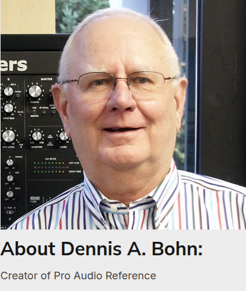

Findings on how signal levels, circuit impedances, and topologies of analog audio equipment should be presented on product data sheets, prepared in support of AES project X152. Interactive engineering tools, continuous vector SVG circuit schematics, Jim Meyer Thevenin 3-impedance models, audio transformer winding simulation, and Dennis A. Bohn's complete Pro Audio Reference.
Status: Report — informative only. This is not a standard and sets no requirements. Where it quotes a published AES or IEC standard, that standard governs.
PIN 2 → GND, PIN 2 ↔ PIN 3.COM: GND / ACROSS measures one leg or the pair.− / + or mouse wheel. All 8 strips share one timebase.The established AES standards and international IEC norms this report draws on, and how each relates to the AES-X152 project:
| Standard | Working Group | Scope & Relevance to AES-X152 |
|---|---|---|
| AES14 (s2014) | SC-05-05 | Application of 3-pin and 5-pin circular connectors (XLR). Defines Table 1: Pin connector (male) = Equipment Output; Socket connector (female) = Equipment Input. Pin 1 Shield, Pin 2 Hot (+), Pin 3 Cold (-). |
| AES26 (s2017) | SC-05-05 | Conservation of Polarity. Defines that positive acoustic pressure produces positive-going voltage on Pin 2 relative to Pin 3 throughout the entire system. |
| AES48 (s2019) | SC-05-05 | Grounding & EMC practices. Connector shields must bond directly to chassis enclosure; Pin 1 must never enter internal audio PCB ground. |
| AES59 (2012) | SC-05-05 | Multichannel 25-way D-type connector pin assignment (DB25). Defines 8 balanced audio channels across 25 pins. |
| AES-X249 | SC-05-05 | Shields of 25-way D-type connectors. Mandates shroud flange (Csf) and jack screws (Cjs) direct metal-to-metal bonding to chassis. |
| AES72-4E (2019) | SC-05-05 | Quad Twisted Pair (QTP) RJ45 audio interconnection. Pin assignments for 4 balanced channels over Category 5e/6 cable. |
| SC-04-04 | SC-04-04 | Microphones: P48/P12 phantom power supply, output impedance balance tolerances, capsule RF shielding. |
| IEC 61938 | TC 100 | Power supply systems for microphones: P48 (+48 VDC via 6.81 kΩ ± 0.1%) and P12 phantom power specifications. |
AES-X152 formalizes analog audio transmission into three discrete architectural sections. Every parameter specified in product data sheets maps to one of these three domains.
The signal source driving the balanced transmission line. Specifies source impedance, balance matching, and maximum voltage drive capability.
The shielded twisted-pair (STP), Star-Quad, or Category cable interconnecting transmitter and receiver over distance.
The destination differential instrumentation amplifier, op-amp receiver, or transformer converting the differential signal to internal audio.
Every warning in this report, collected in one place. Each one is a connection not to make, what happens if you make it, what to do instead, and where the report covers it.
AES-X152 establishes standardized operational signal levels spanning from transducer microvolts to professional studio line levels (+24 dBu). Use the interactive calculator below to convert units in real-time.
Explore the AES-X152 signal chain from source transducer to destination receiver. Select any box in the interconnected chain below to inspect its equipment class, connector standards, grounding boundary, and electrical properties.
Dynamic, ribbon, or condenser microphone capsule. Output signal level is typically -60 to -40 dBu. Source impedance is strictly balanced (150 to 200 Ω). Conforming to AES48, the capsule shield and Pin 1 terminate directly to the conductive microphone chassis shell.
Small-signal transducers generate output voltages between 0.7 mV (-60 dBu) and 77 mV (-20 dBu) with balanced source impedance (150–200 Ω). Preserving common-mode isolation and RF immunity requires three strict rules:
The capsule elements (diaphragm, backplate, or ribbon) must remain electrically isolated from the outer metal shell. The shell acts purely as a Faraday RF shield.
+48 VDC ± 4V delivered equally through matched 6.81 kΩ (≤ 0.1%) resistors to Pins 2 & 3. Cable shield Pin 1 serves as the sole DC return path.
Four conductors wired in cross-connected pairs cancel magnetically induced hum from stage lighting dimmer packs by > 30 dB compared to standard 2-conductor cable.
Drawing on AES59, AES-X249, AES72-4E, AES14 (XLR connectors), AES26 (polarity: Pin 2 hot) and AES48. In modern pro audio installations, an 8-path trunk (AES59 DB25) splits into two 4-path Quad Twisted Pair lines (AES72-4E RJ45), which then break out into discrete XLR-3 or 1/4″ TRS terminations. Inspect the hardware icons, twisted-pair pin allocations, and continuous AES48 chassis shield bonding at each stage:
Click any row below to trace its balanced differential conductors from DB25 to Cat STP cable to discrete breakout:
| Path | AES72-4E Bank | AES59 DB25 Pins (Hot / Cold / Shield) | AES72-4E RJ45 Twisted Pair | Breakout Contacts (XLR-3 or 1/4″ TRS) | Grounding Rule |
|---|
Shield continuity must be maintained 360-degrees end-to-end: The AES59 DB25 metallic shroud (AES-X249) bonds directly to the equipment enclosure, connects through the overall braided foil screen of the Category STP cable, terminates to the conductive metal collar of the AES72-4E RJ45 plug, and bonds to Pin 1 of each XLR-3 (or Sleeve of each 1/4″ TRS). Never lift the shield on multi-pair trunks!
V_diff = V_cm × (ΔC / C_tot).
Even with a 100 dB CMRR receiver, a 3% cable capacitance mismatch allows shield currents to induce differential audio hum (SCIN). Precision bonded pairs and Star-Quad geometries minimize ΔC.
Simulate phase inversion, open conductor drops (1 to 4 pins), dead path loss, and overall shield discontinuity in real time.
Normative 8-path differential contact assignments for all 8 balanced lines, inputs, outputs, and RJ45 breakout links. Pin 13 is strictly NC (No Connect).
| Path | Hot Pin (+) | Cold Pin (−) | Ground / Shield Pin | Equipment Input Gender | Equipment Output Gender | AES72-4E QTP Link & Color |
|---|
Conforming to AES14 (s2014) and IEC 60268-12. Anywhere an XLR circular connector appears across professional audio, gender assignments and electrical contact allocations follow normative rules: Pin connectors (MALE) represent Equipment Outputs, and Socket connectors (FEMALE) represent Equipment Inputs.
Connector contact numbers are viewed on the mating face of the connector.
| Contact Style | Physical Gender | Equipment Application |
|---|---|---|
| 3-Pin Circular (XLR-3) | Pin Connector (MALE) | Equipment OUTPUT (Line Out, Mic Out, DAC Out) |
| 3-Pin Circular (XLR-3) | Socket Connector (FEMALE) | Equipment INPUT (Preamp In, Line In, ADC In) |
| 5-Pin Circular (XLR-5) | Pin Connector (MALE) | Equipment OUTPUT (Stereo / Dual Channel Out) |
| 5-Pin Circular (XLR-5) | Socket Connector (FEMALE) | Equipment INPUT (Stereo / Dual Channel In) |
Click any row below to inspect its wiring pinout, DC powering, and audio polarity on the live mating face:
| Circuit type | Contact 1 | Contact 2 | Contact 3 | Contact 4 | Contact 5 |
|---|---|---|---|---|---|
| Single-channel balanced | Screen | Positive polarity | Return | — | — |
| Single-channel unbalanced | Screen and return | Positive polarity | See Note Connected to contact 1 (or open for unbalanced output) |
— | — |
| Single-channel balanced, phantom supplied | Screen and negative supply | Positive polarity; positive supply | Return; positive supply | — | — |
| Single-channel balanced, A-B supplied | Screen | Positive polarity; positive supply | Return; negative supply | — | — |
| Two-channel balanced | Screen | Left positive polarity | Left return | Right positive polarity | Right return |
| Two-channel unbalanced | Screen and return | Left positive polarity | See Note Left return: Tied to contact 1 (or open) |
Right positive polarity | See Note Right return: Tied to contact 1 (or open) |
| Two-channel balanced, phantom supplied | Screen and negative supply | Left positive polarity; positive supply | Left return; positive supply | Right positive polarity; positive supply | Right return; positive supply |
| Two-channel balanced, A-B supplied | Screen | Left positive polarity; positive supply | Left return; negative supply | Right positive polarity; positive supply | Right return; negative supply |
NOTE — If an unbalanced amplifier input is to accept a balanced microphone, contact 3 (or 3 and 5) of the input shall be connected to contact 1.
Contact 1 is exclusively for the cable screen. In equipment containing active electronics, Contact 1 MUST bond directly to the metal enclosure chassis at connector entry. Never route shield currents across audio 0V circuit PCB traces!
Mating face views showing gender conventions, audio differential polarity, and DC powering levels:
The foundation of balanced audio interconnection. Ground hum, buzz, and interference rejection depend entirely on common-mode impedance symmetry — never on equal signal voltages.
A line is balanced if and only if the impedances to ground of both signal conductors are equal. Signal voltage equality is completely irrelevant to noise rejection. A circuit driving 1.0 V on Pin 2 and 0.0 V on Pin 3 with identical 50 Ω output impedances to ground achieves the exact same common-mode rejection as a push-pull system!
Cable shields are extensions of the equipment metal enclosure. Connector shields (Pin 1 on XLRs, D-sub shrouds per AES-X249) must bond directly to the metal chassis at connector entry. Passing shield currents through internal audio 0V reference traces causes the notorious Pin 1 Problem, coupling ground currents directly into the audio path.
Modern analog audio operates under constant-voltage bridging distribution. Matching 600 Ω load impedances severely degrades signal transfer and frequency response. Modern equipment specifies low output source impedance (≤ 100 Ω) driving high bridging input impedance (≥ 10 kΩ).
Interactive micro math calculators and dynamic circuit models demonstrating IEC/AES standards in real time:
A transmission line consisting of two conductors symmetrically disposed with respect to a common reference (earth/chassis). Noise immunity depends solely on the common-mode impedance balance of the source, transmission line, and receiver.
The average electrical potential appearing identically on both signal conductors relative to a common third point (usually equipment chassis or earth ground): VCM = (V+ + V−) / 2.
The potential difference appearing directly between the two signal conductors: VDM = V+ − V−. This is the desired audio signal that differential receivers amplify.
The ratio of differential-mode gain (AD) to common-mode gain (ACM), expressed in decibels: CMRR = 20 log10(AD / ACM). Represents the receiver's ability to reject hum, buzz, and radio frequency interference.
Differential noise voltage induced into the internal twisted signal pair caused by shield current flow. Principally caused by magnetic coupling due to shield asymmetry or drain wire geometry in foiled cables.
The AC and DC potential difference between the chassis of two interconnected pieces of audio equipment, typically caused by power distribution neutral currents flowing through building ground wiring.
AES-X152 analyzes eight standardized circuit topologies spanning ground-referenced outputs, transformer outputs, cross-coupled drivers, and differential receiver stages. Select any circuit topology below to inspect its live schematic, military test faders, on-wire probes, and fault modes:
Two operational amplifiers driving inverted signals referenced to circuit 0V. Observe live on-wire probes below. Try toggling "Short Pin 3 to Ground" to observe how the inverting op-amp is forced into destructive current limiting!
Simulates plugging an unbalanced TS 1/4" phone plug into this active differential driver.
A single op-amp drives Pin 2 through series resistor RPO. Pin 3 carries zero audio voltage but is terminated to ground through identical resistor RRO. 100% CMRR is achieved with zero risk when shorting Pin 3!
Audio transfers through mutual magnetic flux. Notice the strictly horizontal leads and aligned coils below. Toggle "Tie Pin 3 to Earth Ground" to observe how grounding either pin references the floating winding with zero signal loss!
Vector redrawing of the working group Falstad simulation. Two cascaded isolation transformers (T1 and T2) interconnected by a balanced transmission line with high-frequency noise injection.
Dual cross-feedback active topology emulating a floating transformer secondary. Shorting Pin 3 automatically transfers full 6 dB signal gain to Pin 2 without driver distress.
The standard 4-resistor operational amplifier differential receiver. CMRR is strictly bounded by four internal resistor ratios: a 0.1% tolerance error caps worst-case CMRR to 66 dB.
3-op-amp instrumentation topology or boot-strapped active input presenting megaohm common-mode input impedance (CMZIN > 10 MΩ). Renders common-mode noise conversion completely immune to source resistance mismatches!
High-slew-rate active differential driver stage driving a shielded mu-metal audio transformer with internal electrostatic Faraday shields. Provides infinite DC galvanic isolation, zero Pin 1 shield-current penetration, and 120 dB RF common-mode rejection.
Design custom audio transformers with physical turn counts (N1, N2), wire gauges (34 to 44 AWG), and magnetic core alloys. Connect them to a live virtual test bench with selectable signal generator sources, observe core saturation, and calculate the best termination network (Zobel RC) to damp parasitic ringing!
Live audio transformer physics simulation: Audio signals enter the primary winding (N1) and transfer via mutual magnetic flux (Φ) through the laminated mu-metal core. An internal copper electrostatic Faraday shield bonded to Pin 1 Chassis prevents RF interference. Observe leakage inductance ringing on the dual-trace oscilloscope and frequency response Bode plot, and engage the calibrated Zobel RC termination network below to achieve critical Butterworth damping (ζ = 0.707).
The ultimate analytical proof of balanced audio interconnection. Meyer's 3-impedance model accounts for driver source impedances (ZPO, ZRO), common-mode-to-chassis impedance (CMZOUT), ground loop potential difference (VGVD), cable core-to-shield capacitance (CPS), and receiver input impedances (ZPI, ZRI).
Use the interactive sliders below to introduce source impedance imbalances (ΔZ = |ZPO − ZRO|) and observe the ground voltage differential (VGVD) driving interference current that converts directly into differential hum:
When a ground voltage difference (VGVD) exists between the two equipment chassis, common-mode ground current flows through the interconnected shields and circuit impedances. The voltage that converts into differential audio error (Verr) at the receiver input terminals is given by:
Critical Engineering Revelations from Meyer's Model:
1. If ZPO = ZRO exactly, (ZPO − ZRO) = 0, and zero common-mode voltage is converted to differential error, yielding infinite Thevenin CMRR!
2. High receiver common-mode impedance (CMZIN > 50 kΩ) dramatically reduces error voltage even when source impedances are mismatched.
3. Cable capacitance-to-shield balance (CPS) must match symmetrically; otherwise high-frequency RF noise converts into audible demodulated buzz.
Engineering guidance for connecting balanced equipment to unbalanced inputs and outputs. Based on the definitive compatibility matrix by Richard L. Hess (AES Fellow).
Use the Hess chart for less hiss and better Hess.
| # | Balanced Output Topology (Source) | Connection to Unbalanced Input (Destination) | Pin 3 (Cold / Return) Treatment | Signal Level Impact | Distortion & Safety Risk |
|---|---|---|---|---|---|
| 1 | 6.1 Push-Pull (Ground Referenced) | Pin 2 to Tip, Pin 1 to Sleeve | FLOAT PIN 3 (DO NOT SHORT!) | Drops by 6.0 dB (Half voltage) | Shorting Pin 3 forces op-amp into current limiting, severe distortion, and thermal failure! |
| 2 | 6.2 Active Impedance-Balanced | Pin 2 to Tip, Pin 1 to Sleeve | Tie Pin 3 to Pin 1 or Float | 0.0 dB Loss (Full voltage preserved) | Zero risk. Pin 3 carries no audio signal voltage; grounding is 100% safe. |
| 3 | 6.3 Transformer Floating | Pin 2 to Tip, Pin 3 to Sleeve | MUST BOND PIN 3 TO SLEEVE | 0.0 dB Loss (Full winding voltage) | Zero risk. Floating winding must have Pin 3 tied to ground for unbalancing. Floating produces open circuit. |
| 4 | 6.4 Double Transformer Link | Pin 2 to Tip, Pin 3 to Sleeve | Tie Pin 3 to Ground at Destination | 0.0 dB Loss | Zero risk. Galvanic isolation eliminates ground loops between equipment completely. |
| 5 | 6.5 Cross-Coupled (THAT OutSmarts) | Pin 2 to Tip, Pin 3 to Sleeve | MUST SHORT PIN 3 TO PIN 1 | 0.0 dB Loss (Automatic +6dB transfer) | Shorting Pin 3 safely transfers drive gain to Pin 2 emulating a true floating winding. |
| 6 | 3.5mm (1/8″) Stereo TRS to Dual Balanced XLR / 1/4″ TS | Tip → Left Pin 2, Ring → Right Pin 2, Sleeve → Both Pins 1 & 3 | STEREO SPLITTER REQUIRED | 0.0 dB Loss | Correct way to connect phones, laptops, and field recorders to pro balanced stereo inputs. Keeps L & R channels independent. |
| 7 | 3.5mm (1/8″) Stereo TRS into Single Balanced Mono XLR/TRS | Tip → Pin 2 (+), Ring → Pin 3 (-) | DO NOT USE DIRECT CABLE! | -∞ dB Loss (Center vocals & bass cancelled!) | THE DIFFERENTIAL CANCELLATION DISASTER: The balanced receiver subtracts (Tip - Ring). Center mono signals (vocals, kick, bass) are completely subtracted to 0V! Requires summing box or stereo DI. |
| 8 | 3.5mm (1/8″) Mono TS (Modular Synth / Eurorack) | Tip → Pin 2, Sleeve → Pin 1 (Pin 3 Impedance Matched) | Tie Pin 3 to Gnd via Z_match | Full level preserved | High-level 10Vpp Eurorack modular signals feeding balanced interface. Impedance balance prevents ground hum loops. |
| 9 | Unbalanced Output to Balanced Input (1/4″ TS & RCA) | Tip to Pin 2, Sleeve to Pin 3 | Connect Sleeve to Pin 3 at Source | Full level preserved | Shield ties to Pin 1 at balanced input only (pseudo-balanced cable topology). |
Understanding where audio signals and chassis shield connect across consumer mini-jacks (3.5mm), instrument phone plugs (1/4″ TS/TRS), consumer hi-fi (RCA), and professional XLR.
Signal generator feeding 3.5mm stereo unbalanced output. Tip splits to Left Channel, Ring splits to Right Channel. Chassis shield ties to Pin 1.
Modular synth & mini-mic unbalanced 3.5mm TS feeding pro balanced XLR. Pin 3 impedance-balanced or referenced to Pin 1.
Direct 3.5mm TRS-to-XLR cable into mono input: Tip goes to Pin 2, Ring goes to Pin 3. Balanced receiver computes (L - R) → center vocals and bass vanish!
For Circuit 6.1 (Dual Op-Amp Push-Pull). Pin 3 is left UNCONNECTED to prevent shorting the inverted amplifier.
For Circuit 6.3 (Transformer) & 6.5 (Cross-Coupled). Pin 3 is BONDED TO PIN 1 to reference the floating circuit.
Unbalanced RCA or TS output feeding a balanced XLR input. Maintains differential CMRR rejection over the cable length!
Interconnecting Unbalanced Audio Equipment (RCA Phono & 1/4″ TS) with Professional Balanced Standards.
The complete physical, electrical, and standards domain of balanced audio broken down into 100 modular Markdown documents across 10 structured engineering parts. Each module feeds complete theoretical proofs, mathematical derivations, circuit schematics, and normative standards citations directly into the portal.
Example product data sheet templates following the AES-X152 draft, Parts 1 through 4. Use the live interactive builder below to customize parameters, download pristine Blank Templates, and watch the specification assemble in real time as you build.
Honoring Dennis A. Bohn (AES Fellow, creator of the Pro Audio Reference). Explore the pro audio writing style conventions, Greek technical symbols, and complete reference encyclopedia donated by Dennis Bohn to the Audio Engineering Society.

Dennis Bohn received BSEE and MSEE degrees from UC Berkeley in 1972 and 1974, respectively. After completing his MSEE, he accepted a position with National Semiconductor Corporation as a linear application engineer specializing in audio, where he created the renowned Audio Handbook, acting as technical editor and contributing author.
In 1976, he joined Phase Linear Corporation as Senior Design Engineer, where he designed several consumer audio products, and managed the launch of the professional audio products division.
In 1982, Mr. Bohn joined start-up Rane Corporation as vice president of engineering. He became a principal of Rane, and led the company’s research and development for over 30 years until his retirement in 2016. Bohn designed over 40 consumer and professional audio products, and authored over 100 articles, including landmark papers published in the AES E-Library and Journal of the Audio Engineering Society. Mr. Bohn is a Fellow of the AES, holds three U.S. patents, is listed in Who’s Who In America, and authored the entry on “Equalizers” for the McGraw-Hill Encyclopedia of Science & Technology, 7th edition.
Fulfilling a life-long passion for technical writing, Bohn began his Professional Audio Reference (PAR) project in the mid-1990s. With his HTML partner Jeff Davies, Bohn created an online audio encyclopedia hailed by educators and professionals all over the world. A printed book version of the PAR was self-published in 2002.
Mr. Bohn retired in 2016 and donated the PAR to the Audio Engineering Society as a living resource for future generations of audio engineers. The AES is extremely grateful to Mr. Bohn for his significant contributions to the science, practice, and knowledge of audio.
Standards and conventions compiled by Dennis A. Bohn for clear, accurate professional audio technical writing:
1/4″ TRS (tip-ring-sleeve) or 1/4″ TS (tip-sleeve) must always be written in ALL CAPS with a space. Never use lowercase ("1/4 trs") or hyphens ("1/4-trs"). Use the inch mark (″) or "in", never a plain quote mark.
Standards and Recommended Practices are written as AESn with no space or hyphen (e.g., AES3, AES14, AES48; not "AES 3" or "AES-3"). Information documents use AES-nid (e.g., AES-6id). Project reports use AES-Rn.
Always insert a space between a numerical value and its unit (e.g., 20 Hz to 20 kHz, +4 dBu, 10 kΩ, 120 W; not "20Hz" or "+4dBu"). Names of units spelled out are lowercase (watt, hertz, volt); abbreviations derived from names are uppercase (W, Hz, V).
16-bit is used as an adjective modifying a noun ("a 16-bit converter") and always requires a hyphen. 16 bits is used as a noun ("the unit has 16 bits") and never takes a hyphen.
Active-high is used as an adjective ("an active-high logic enable") with a hyphen. Active high is used as a predicate noun phrase ("the logic rule is active high") without a hyphen.
Mention NO company names except for historical credit or founding inventor attribution (as preserved in Dennis Bohn’s Pro Audio Company Names reference). Technical standards must remain strictly vendor-agnostic.
Engineering symbols and their audio, electrical, and physical meanings compiled by Dennis A. Bohn:
| Upper | Lower | Greek Letter | Electrical, Audio & Physical Engineering Meanings |
|---|
A definitive compilation of 16 peer-reviewed AES convention preprints, Journal papers, and official AES-X152 working drafts establishing the physical and mathematical foundations of balanced audio interconnections, ground loop mechanics, Pin 1 RFI suppression, and phantom power protection.
Demolishes the common myth that differential receiver resistor matching is the primary factor in real-world common-mode rejection. Proves that real-world CMRR is severely degraded by source impedance imbalances (ΔZ) interacting with receiver common-mode input impedance (ZCM).
CMRR_real ≈ 20 log10(Z_CM / ΔZ)
To maintain 90 dB CMRR with a 10 Ω source imbalance, ZCM must exceed 300 kΩ.
Analyzes electronically balanced cross-coupled output drivers designed to emulate transformer floating characteristics. Examines current-limiting, feedback loop stability, and headroom behavior when Pin 3 is grounded for unbalanced operation.
Investigates the primary failure mechanism of studio microphone preamplifiers: hot-plugging cables with +48V phantom power active. Proves that discharging AC coupling capacitors generates reverse transients exceeding ±40V and peak currents over 2 Amps directly into preamp input transistors.
Examines the susceptibility of studio condenser microphones to RF interference from GSM mobile phones, Wi-Fi transmitters, and broadcast arrays. Identifies internal Pin 1 routing and missing 360-degree connector bonding as the primary RF demodulation mechanism.
Rigorous laboratory analysis of cable physical asymmetry, twist pitch irregularities, and conductor-to-shield capacitance imbalance (ΔC). Demonstrates mathematically how cable asymmetry converts common-mode voltages into differential audio noise.
V_diff = V_cm × (ΔC / C_tot)
In a 100-meter snake with a 3% capacitance mismatch, a 10V common-mode voltage generates 300 mV of differential buzz that no downstream receiver can reject!
Connects Neil Muncy's AES48 Pin 1 discoveries with high-frequency electromagnetic compatibility (100 kHz to 1 GHz). Proves that even a 1-centimeter PCB trace between Pin 1 and chassis enclosure acts as a high-frequency antenna inside equipment.
Provides standardized, low-cost diagnostic methods for evaluating equipment Pin 1 integrity and shielding before deployment. Introduces the "Chattering Relay" pulse test and signal-generator RF common-mode current injection methods.
Presents the InGenius balanced input architecture (THAT 1200 series). Uses common-mode bootstrapping to achieve > 10 MΩ common-mode input impedance while maintaining standard differential input impedance, preserving CMRR in real-world environments.
Definitive engineering guide on ferrite materials for audio cables. Disproves the myth that ferrites act as inductors; demonstrates that at RF frequencies ferrites are lossy series resistors that dissipate RF energy as heat rather than reflecting it.
Authoritative historical evolution of microphone electrical interfaces: from 200 Ω dynamic transducers and T-power (DIN 45595) to modern P48 phantom powering (DIN EN 61938). Focuses on grounding architecture inside condenser microphone housings.
Expands Hebert's investigation of phantom hot-plugging. Reveals that steering diodes dump capacitor energy directly into power supply rails, pumping ±15V rails up to ±32V and causing catastrophic CMOS latch-up across adjacent audio ICs.
Whitlock's seminal treatise on balanced transmission physics. Compares physical audio transformers with electronic differential amplifiers, detailing Faraday shielding, core saturation, and CMRR behavior across frequency.
Solves the puzzle of ground voltage differences between distant wall outlets: proves they are caused by magnetic induction from ordinary AC branch circuits in conduit rather than soil resistance.
Canonical working group topology classification schematic establishing the Four Fundamental Output Types: Type 1 (Transformer), Type 2 (Cross-Coupled Electronic), Type 3 (Impedance-Balanced Passive), and Type 4 (Ground-Referenced Push-Pull).
The official working drafts of AES-X152 establishing the normative presentation clauses for signal levels, circuit impedances, maximum output into 600 Ω and 100 kΩ, and standardized product data sheet reporting formats.
Definitive exposition exposing the myth of "ground lifting" and demonstrating why Pin 1 shield-current induced noise (SCIN) and safety-ground loops occur. Provides concrete circuit-level topologies to eliminate ground loop hum through true impedance balance and magnetic isolation.
Establishes normative boundaries for source impedance matching between positive and return signal legs. Proves that an imbalance ΔZ of just 1 Ω can degrade system CMRR by over 30 dB in high-interference environments.
Standardizes laboratory measurement methodology for Common-Mode Rejection Ratio (CMRR) under realistic conditions, mandating that test generators insert an artificial 10 Ω imbalance to expose real-world susceptibility.
Formalizes allowable common-mode voltage headroom for active input stages before internal clipping or common-to-differential conversion occurs. Analyzes the impact of branch-circuit ground noise in large facilities.
The foundational document establishing the taxonomy of the 8 canonical output circuits (Dual Push-Pull, Active Impedance-Balanced, Transformer Floating, Cross-Coupled, etc.) and analyzing behavior when Pin 3 is shorted to ground.
Resolves the multichannel DB25 grounding crisis by standardizing direct metal-to-metal bonding of connector shroud flanges (Csf) and threaded jack screws (Cjs) directly to equipment chassis ground per AES48.
Chronological timeline of landmark milestones from Dennis A. Bohn's Pro Audio Reference library, prior foundational works, and the working group contributors of AES SC-05-05.
Lord Rayleigh (1896) publishes The Theory of Sound (Dover), establishing the mathematical foundations of acoustic waves.
Alan Dower Blumlein (1931) files landmark patents on stereophonic sound, phantom circuits, and balanced microphone lines.
Harry F. Olson (1952/1957) authors Acoustical Engineering and Music, Physics and Engineering.
Leo L. Beranek (1954) authors the definitive classic Acoustics (McGraw-Hill), the foundational text for electroacoustics and transducers.
Fritz Langford-Smith (1952) compiles the Radiotron Designer's Handbook, 4th ed., explaining audio transformer bifilar windings and push-pull circuits.
Semi Joseph Begun (1954) pioneers magnetic tape recording and publishes the first definitive texts on magnetic storage.
Howard M. Tremaine (1973) publishes the Audio Cyclopedia, 2nd ed. (Howard W. Sams), establishing the all-around fundamentals of balanced line transmission.
Gerald E. Williams (1973) authors Practical Transistor Circuit Design and Analysis (McGraw-Hill).
Dennis A. Bohn (1976) creates the renowned Audio Handbook at National Semiconductor, setting the benchmark for op-amp audio circuits.
Peter Baxandall & Douglas Self (1978–1980) publish landmark papers in Wireless World on low-distortion negative feedback and Class B output stages.
Don & Carolyn Davis (1987) publish Sound System Engineering, 2nd ed. (Sams), founding Syn-Aud-Con seminars.
Paul Horowitz & Winfield Hill (1989) publish The Art of Electronics (Cambridge University Press).
Dennis A. Bohn (1989) presents Operator Adjustable Equalizers: An Overview at the AES 6th International Conference.
Philip Giddings (1990) publishes Audio System Design and Installation (Sams), the definitive manual on grounding, shielding, and AC power.
Robert A. Pease (1991) authors Troubleshooting Analog Circuits (Butterworth-Heinemann).
Jim Williams (1991) edits Analog Circuit Design.
John Watkinson (1991/1995) authors The Art of Digital Audio and Compression in Video & Audio.
Neil Muncy & Bill Whitlock (1995) publish the landmark AES Special Issue Shields and Grounds: Safety, Power Mains, Studio, Cable and Equipment (JAES Vol. 43, No. 5), defining the Pin 1 Problem and establishing that common-mode rejection depends solely on source impedance balance!
Dennis A. Bohn (1996) begins the online Pro Audio Reference (PAR) project, compiling thousands of terms, style guides, and landmark books.
Stephen H. Lampen (1998) publishes Wire, Cable & Fiber Optics for Video & Audio Engineers (McGraw-Hill).
Tim Williams & Keith Armstrong (2000) author EMC for Systems and Installations (Newnes).
Albert S. Bregman (1994) authors Auditory Scene Analysis (MIT Press).
AES48 Standard (2005) is published, codifying mandatory direct chassis bonding of connector shields.
Following the adoption of AES48, Bruce Hofer and Bill Whitlock identify widespread confusion in manufacturer data sheets regarding input/output impedances and signal level reporting. Project AES-X152 is chartered under the SC-05-05 Working Group.
John Woodgate formalizes the separation of the interconnection standard into The Three Parts: Part 1 (The Transmitter), Part 2 (The Transmission Medium), and Part 3 (The Receiver). Harmonizes balance factor definitions with IEC 60268-3.
Joint sessions between SC-05-05 and SC-04-04 (Microphones) establish the normative reporting of microphone output impedance balance, P48 phantom power DC current consumption, and capsule shield termination boundaries per Ray Rayburn's update to The Microphone Book.
Richard Hess creates the definitive compatibility matrix analyzing what occurs when each balanced output topology is connected to unbalanced inputs.
In 2016, Dennis A. Bohn retires after 30+ years leading Rane engineering and donates the entire Pro Audio Reference to the Audio Engineering Society.
Comprehensive reorganization of the standard into modern visual mind maps (.smmx) and machine-readable datasheet templates. Integration of AES59 multichannel DB25 pinouts and AES72-4E RJ45 quad twisted pair mappings.
Jim Meyer contributes the groundbreaking Thevenin 3-impedance equivalent circuit (ZPO, ZRO, CMZOUT, cable parasitics, and receiver impedances). Proves mathematically how ground potential differences (VGVD) convert directly into differential error via source impedance imbalance.
Integration of project AES-X249 into AES48 establishing mandatory D-sub shroud flange (Csf) and jack screw (Cjs) direct metal-to-metal bonding. Harmonization across AES14 XLRs, AES59 DB25, and AES72 RJ45 connectors. Final release of AES-X152 single-page interactive reference.
Key contributors, working group leaders, committee chairs, and researchers driving AES14, AES48, AES59, AES72, AES-X152, and AES-X249 standards. Click any alignment badge to jump to their specific tools, models, papers, and timeline milestones.
Chair of the AES Standards Committee and Past President of the Audio Engineering Society. Guiding force overseeing standards development across interconnection, grounding, acoustics, and electroacoustics. Led harmonization of SC-05-05 (Grounding & EMC), SC-05-02 (Connectors), and SC-04-04 (Microphones) working group initiatives worldwide.
Veteran audio systems engineer, educator, and AES Standards contributor. Deep expertise in practical grounding, equipment hum troubleshooting, balanced microphone splitters, and audio interface design. Authored extensive practical guides on balanced line theory, transformer coupling, and the elimination of ground loops in professional broadcast and recording environments.
Vice-Chair and longstanding pillar of AES SC-05-05. Put in extensive work drafting and technically refining AES-X152 and AES-X249. Co-authored the landmark Project AES-X249 D-sub shielding standard and its integration into AES48 with Richard Cabot, Bill Whitlock, and Anthony Kuzub.
Put in immense dedication and engineering rigor creating the definitive Balanced-to-Unbalanced Interconnection Compatibility Matrix. Analyzed the electrical behavior, gain shifts, and distortion hazards of connecting differential line drivers to single-ended loads. Key co-author across AES-X152 drafts.
Active contributor to AES standards initiatives, working group sessions, and technical document reviews across Latin America and internationally. Dedicated champion of standards adoption, educational dissemination, and practical implementation of AES48, AES59, and AES72-4E across live sound, studio recording, and broadcast facilities.
Longstanding active participant in AES SC-05-05 working group deliberations. Contributed extensive real-world broadcast systems engineering experience to the evaluation of connector shield continuity, multi-pair snake grounding, cable capacitance unbalance, and the mitigation of RF demodulation in commercial facilities.
Co-originator of AES48 and Project AES-X152. Proved mathematically and empirically that common-mode rejection depends solely on source impedance balance, not voltage symmetry. Author of seminal preprints on CMRR, SCIN, and inventor of the InGenius balanced receiver IC.
Longstanding SC-05-05 working group member. Architect of "The Three Parts" framework in AES-X152 (Part 1 Transmitter, Part 2 Medium, Part 3 Receiver), EMC harmonization with IEC 60268-3, and fundamental balance factor definitions.
Author of the definitive Thevenin 3-impedance equivalent circuit model (Z_PO, Z_RO, CMZ_OUT) in AES-X152. Mathematically proved how ground potential differences (V_GVD) convert directly into differential error via source impedance imbalance.
Chair of SC-05-02. Led the development of SXLR, advanced connector EMC standards, etherCON chassis shield termination, and multi-pin interconnection standards across pro audio and broadcast installations.
Key contributor to multi-channel snake, multicore cabling, connector pinouts, and field interconnection standards across SC-05-05 and SC-05-02. Developed stage box and multicore trunking best practices.
Longstanding active contributor to SC-05-05 working group deliberations, technical review of grounding drafts, and standard interconnection alignment across high-reliability sound systems.
Pioneering works and convention presentations on AES72 Quad Twisted Pair (QTP) category cable for balanced audio transmission, impedance balance, and structural return loss across structured Category cable.
Chair of AES SC-05-05. Compiled and published the canonical 16-paper research dossier on October 3, 2025. Established the normative product data sheet reporting format for AES-X152 Part 1 & Part 2.
Reorganized AES-X152 into visual mind maps, machine-readable JSON schemas, and structured web reference tools. Formulated the unified AES59 DB25 and AES72-4E QTP multichannel hierarchy and interactive testing engines.
Author of the National Semiconductor Audio Handbook (1976), RaneNote 110 ("Sound System Interconnection"), and creator of the Pro Audio Reference (PAR) donated to the AES in 2016.
Paul Treleaven • Timothy Thompson • William Thompson • Alastair Walker • Naoto Yamaguchi • Villem Teder • Kelly Statham • Dietmar Rottinghaus • Martin Schneider (Neumann, SC-04-04) • Aldo Soares • David Josephson (Josephson Engineering, SC-04-04 Chair) • Gary Hebert (THAT Corporation) • Wayne Kirkwood (Audio Design) • Bruce C. Hofer (Audio Precision).